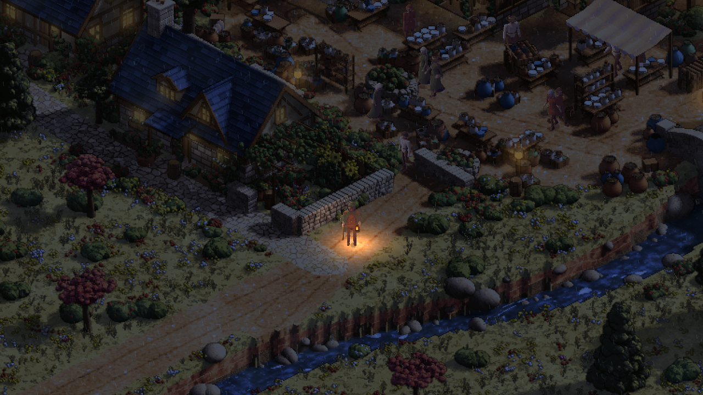
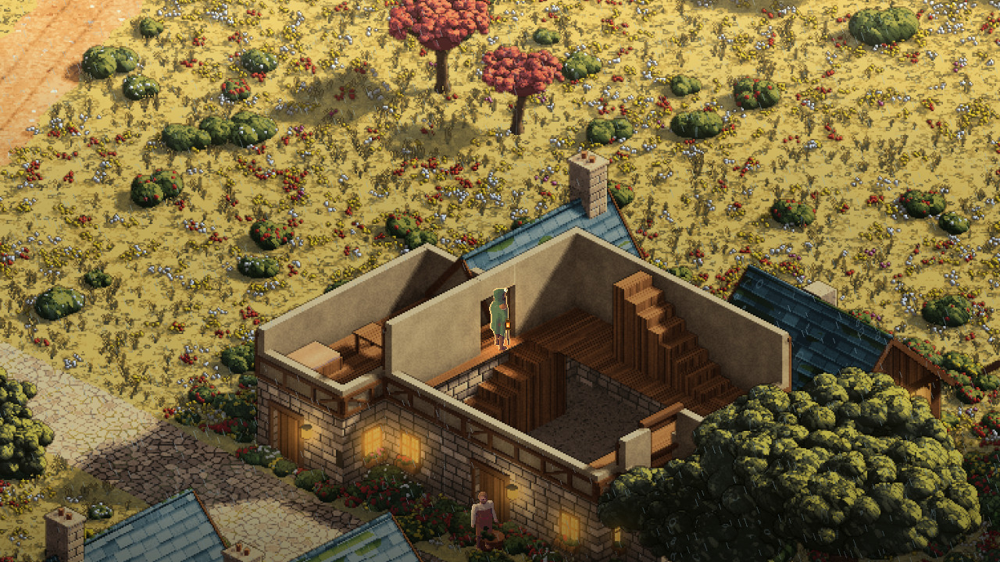

Day 32: Rain on the old lanes
A warm lantern matters more when the lane outside is cold and wet. That was the next moment I wanted to build: drops crossing the light, small impacts on the road, then the relief of stepping through a doorway while the rain keeps going outside.

The first version was a plan and a rendering experiment. This pass brought it into the playable town. These pictures now come from Godot itself, with the traveller, buildings and people sharing the same scene.
The first drops
Sprawl already had weather calculations, ground wetness and generated rain sounds. The playable town now connects to those pieces. The rain stays with the world as the camera moves, and the road's highlights take some of the lantern's warmth. Overcast weather cools the scene around that small pool of light.
Ground marks sit behind the characters. Stepping into a house leaves the revealed room dry and makes the rain outside quieter. Reduced motion keeps the wet surface while removing the animated drops and impacts. For now the skies are chosen explicitly for play and review; this is not yet a persistent weather cycle across the county.
What the review caught
The first test picture made the wet patches look like separate blocks. Those boundaries are now smoothly blended. Timing the effect exposed another problem: the early shader did expensive work even when reduced motion hid its result. The revised pass skips that work and uses cheaper variation for the drops and wet ground.
The inn review found something more visible. A streamed picture could arrive with the roof closed, even though the traveller was already upstairs. The room's open view arrived afterwards. That brief return of the roof hid the character and broke the feeling of being inside.
The old picture now stays until the replacement includes the occupied room. The review also found an existing crash where a flat-topped tower was treated as a pitched roof while checking whether it hid the player. Flat tops now have their own silhouette path.

This was the useful part of taking the work beyond its first test scene. A successful state check did not guarantee the picture was right. Walking through the town and reading the actual captures found the gap.
What works, and what is still open
The native checks now cover walking in rain, entering and leaving a real room, connected inn rooms on two floors, changes of view, reduced motion and the lantern staying attached to the traveller. There is also a recorded walk for review. The upper-floor check uses a placed fixture; it does not establish a complete walk up the inn's stairs.
The timing results are encouraging, but the test machine renders through software. Rain is cheaper than the first pass, while occasional slow frames remain in both clear and rainy controls. This still needs review on the game's normal graphics hardware.
The wet patches are visual highlights, not reflective puddles or a water simulation. Connected house interiors have explicit shelter; porches, arcades and tree canopies need broader cover data. Those limits stay visible in the handoff rather than becoming promises hidden behind a nice picture.
The implementation and this report are awaiting review. Nothing here has been merged or announced as a finished weather system. The part worth keeping is the small, playable contrast: a wet lane, a warm light, and a dry room beyond the door.